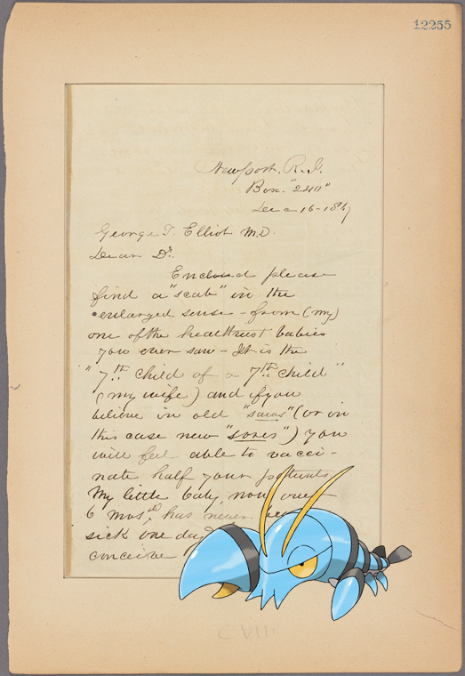

Pokémon in the NYPL archives
2018-7-20 20:10:03
Hitmontop on
[Eau-de-nil satin shoe worn by Miss Ada Cavendish as Lady Teazle; beaded shoe; yellowish green shoe.]
.
2018-7-20 18:10:04
on
DAILY MENU [held by] OCEAN HOUSE [at] (HOTEL)
2018-7-20 16:10:03
Electivire +
1-3. Roues en cuivre avec essieux en fer (Harem); 4,5. Queues d'arondes en plomb (Sérail); 6. Pivot en cuivre (Harem); 7-9. Chaines et crampons (magasins 'm' des dépendances.) (Réduction au tiers.)
2018-7-20 14:10:03
Volbeat @
Kuryet-el-'Anab, the village of grapes, probably the Kirjath of Benjamin. It is now commonly called Abu Ghosh. The large building on the right is the Church of St. Jeremiah.
.
2018-7-20 12:10:04
Helioptile |
DINNER [held by] FIFTH AVENUE HOTEL (?) [at] "NEW YORK, NY" (HOTEL;)
.
2018-7-20 10:10:05
Mamoswine ;
Vue de l'Okel Zoulfiqar
!
2018-7-20 08:10:09

Clauncher +
EM. 12255
!
2018-7-20 06:10:04
Kyogre, Dialga on
Germany, 1871-1909
.
41
|
40
|
39
|
38
|
37
|
36
|
35
|
34
|
33
|
32
|
31
|
30
|
29
|
28
|
27
|
26
|
25
|
24
|
23
|
22
|
21
|
20
|
19
|
18
|
17
|
16
|
15
|
14
|
13
|
12
|
11
|
10
|
9
|
8
|
7
|
6
|
5
|
4
|
3
|
2
|
1
|
0

![; DAILY MENU [held by] OCEAN HOUSE [at] (HOTEL). http://digitalcollections.nypl.org/items/f6b318b0-c52f-012f-7ba4-58d385a7bc34](media/finding-eeDzXXcM.png)
![Helioptile on DINNER [held by] FIFTH AVENUE HOTEL (?) [at]](media/finding-xsvcsRoW.png)
 Mamoswine ; Vue de l'Okel Zoulfiqar!
Mamoswine ; Vue de l'Okel Zoulfiqar! Kyogre, Dialga on Germany, 1871-1909.
Kyogre, Dialga on Germany, 1871-1909.